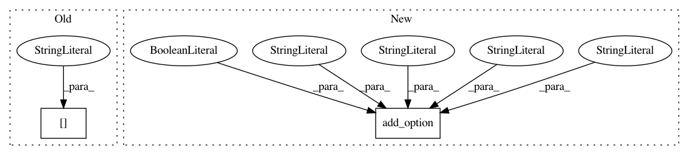

9a84af78d5b9039e794973b79db0ee0d516e6641,bin/basenji_sat_plot.py,,main,#,46
Before Change
ref_scores = scores[seq_1hot]
for tii in range(num_targets):
ti = targets_df["index"].iloc[tii]
scores_ti = scores[:,:,ti]
After Change
help="Minimum heatmap limit [Default: %default]")
parser.add_option("-o", dest="out_dir",
default="sat_plot", help="Output directory [Default: %default]")
parser.add_option("--png", dest="save_png",
default=False, action="store_true",
help="Write PNG as opposed to PDF [Default: %default]")
parser.add_option("-r", dest="rng_seed",
default=1, type="float",
help="Random number generator seed [Default: %default]")
parser.add_option("-s", dest="sample",
In pattern: SUPERPATTERN
Frequency: 3
Non-data size: 2
Instances
Project Name: calico/basenji
Commit Name: 9a84af78d5b9039e794973b79db0ee0d516e6641
Time: 2019-04-16
Author: drk@calicolabs.com
File Name: bin/basenji_sat_plot.py
Class Name:
Method Name: main
Project Name: calico/basenji
Commit Name: 98b1fe8f5c1acccb31c10028bccaa797470279d2
Time: 2019-08-23
Author: drk@calicolabs.com
File Name: bin/basenji_map.py
Class Name:
Method Name: main
Project Name: calico/basenji
Commit Name: 6d7cc6e2fecade5cd9a66ab29452131dcb1d618e
Time: 2019-08-23
Author: drk@calicolabs.com
File Name: bin/basenji_sad_ref_multi.py
Class Name:
Method Name: main